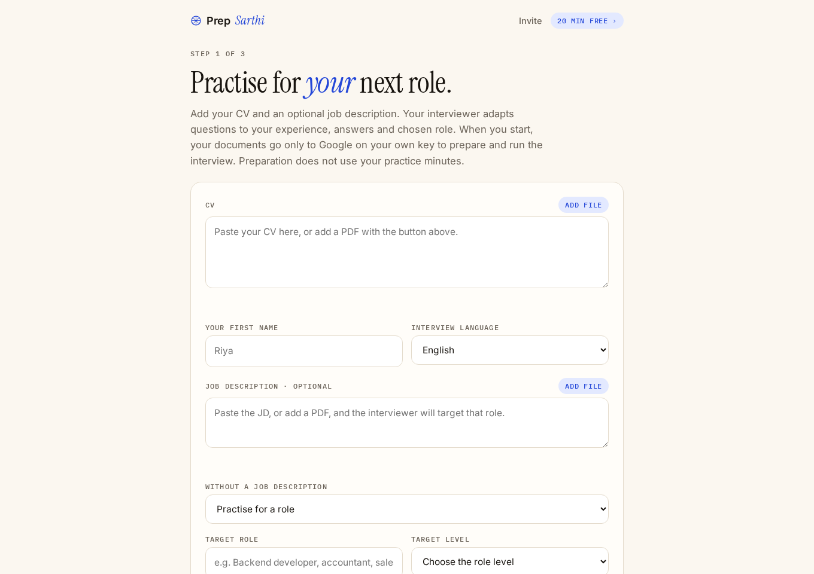

Home › Guides › Accenture, Cognizant & Capgemini HR round
Accenture, Cognizant and Capgemini HR interview questions: practice answers
Prepare clear, honest answers before your Accenture, Cognizant and Capgemini interview. These sample questions help you rehearse; the employer decides the actual rounds and questions.
Independent practice examples. We are not affiliated with these employers. Their selection processes vary by role and drive. The examples below are our preparation advice, not leaked questions, a scoring rubric or a promise of selection.
Check the official hiring information
Use your own interview invitation for round format, documents, language and timing. Official sources checked 24 September 2026: Accenture recruitment FAQs, Cognizant GenC program, Capgemini India recruitment process.
Questions and answers to practise
1. “Tell me about yourself”
Use a short introduction: your current situation, one relevant piece of work and why you are interested in this role. For example: “I’m a computer science graduate. I built the booking module for our college project and tested it with our placement team. I’m looking for a role where I can develop that backend experience.” Replace every detail with your own.
See the self-introduction structure and examples.
2. “Why do you want to work here?”
Choose one detail from the current job description or the employer’s official site and connect it to your interests. Instead of just saying “a big brand,” explain which work or learning opportunity interests you and what you can contribute. Do not claim to have used a program or product you have never tried.
3. “Are you willing to relocate or work shifts?”
State your actual flexibility and any firm constraint. For example: “I’m open to relocating. Pune would be my preference because I have family there, but I can consider the locations in this posting.” If permanent nights are not workable, say that clearly and ask whether the role requires them.
4. “Explain this gap or backlog”
Give the fact, a short explanation and what changed. A practice example: “I had two backlogs in second year. I cleared both the next semester and changed how I planned revision.” Use your actual dates and results. See the career-gap answer examples for other situations.
5. “When can you join? Do you have other offers?”
Give a date you can meet and describe your situation accurately. Check your graduation schedule or current contract before promising an early start. If you have another process underway, you can say so without inventing an offer or a deadline.
6. “Are you comfortable with the offer terms?”
Read the actual pay, location, training and any service agreement. Ask for clarification before accepting something you do not understand. Terms from an old hiring drive do not establish the terms in your offer.
7. “What are your salary expectations?”
If the posting gives a fixed package, confirm that you understand it and ask how its components work. If compensation is open for discussion, use a range based on the role and your research. Our salary expectation examples show how to ask about the budget.
Before the interview
- Re-read your CV and application. Correct any changed availability or other outdated information.
- Prepare the documents requested in your invitation.
- Practise one project answer and one HR answer back to back.
- Use the requested language; ask before switching.
- Keep examples specific and truthful. There is no answer that guarantees an offer.
Practise these answers out loud
Prep Sarthi runs a voice AI mock interview from your CV and target role, asks follow-up questions and gives feedback on weak answers. Try a free 7-minute demo, with nothing to set up; a paid pass is ₹99 for 30 days.

Try a free AI mock interviewSee how to practise from your resume. Still looking for a role? Apply Sarthi brings jobs from multiple sources together. For permitted assistance during a real call, see Live Sarthi.